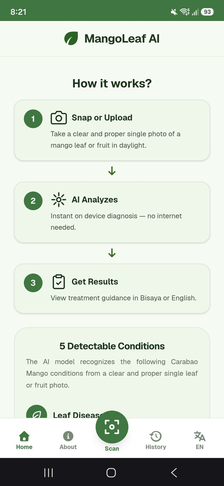
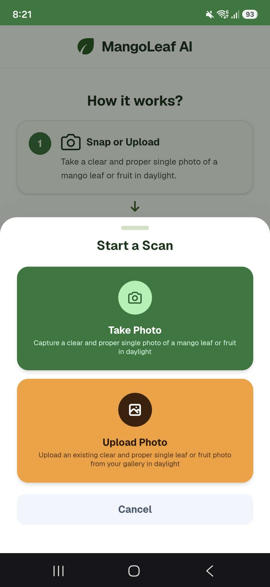
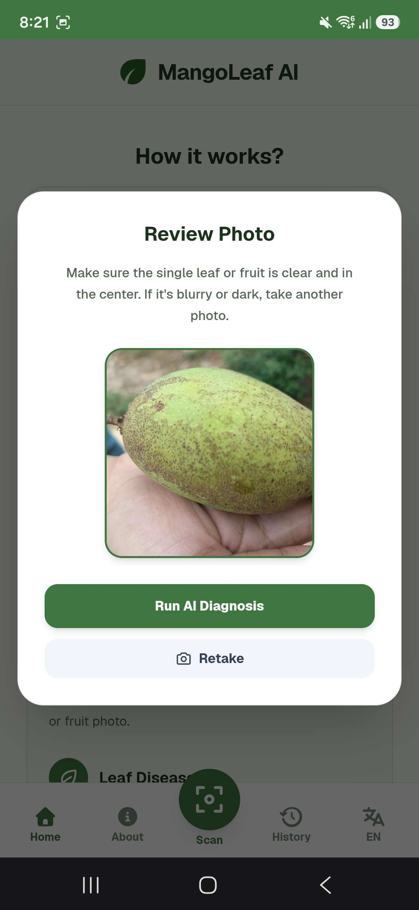
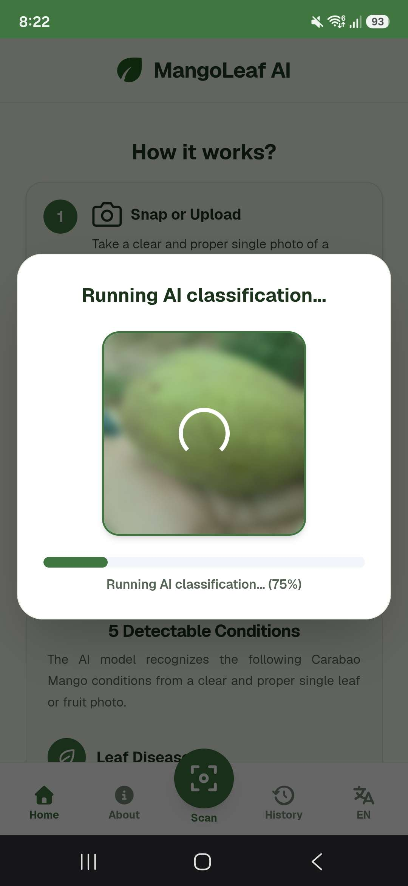
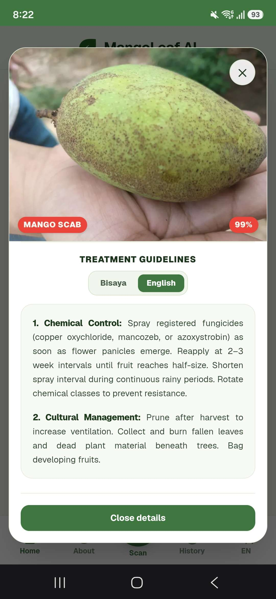
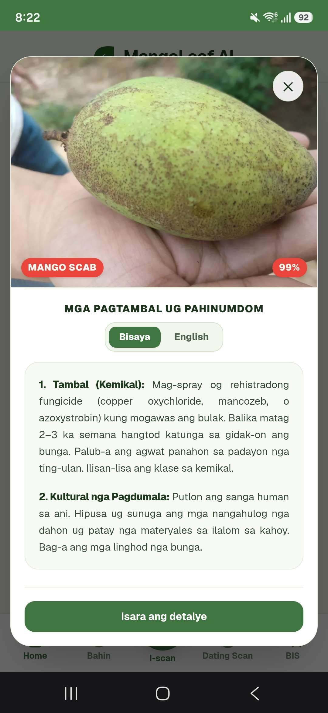
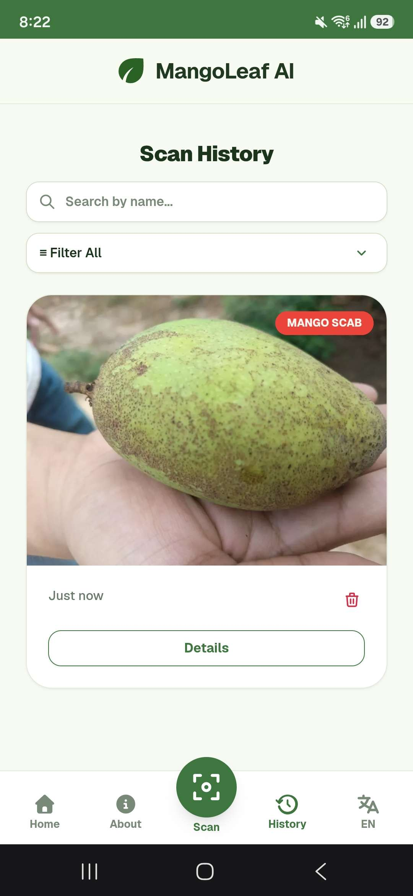

MangoLeaf AI
Protect Your Harvest with Edge AI
Fast, offline-ready diagnosis designed specifically for Philippine Carabao mango growers.
Take a Photo or Select from Gallery
Take a clear and proper single photo of a mango leaf or fruit in daylight, or choose an existing image from your gallery.
Instant On-Device AI Classification
TensorFlow.js processes the leaf image locally in your browser with zero latency and complete privacy.
Clear Identification & Confidence
Identifies Anthracnose and other critical foliar diseases with high confidence scores and symptoms breakdown.
Actionable Treatment in Bisaya & English
Switch to Cebuano/Bisaya with one tap so local farmers and farmhands can understand immediate treatment steps.
Track Previous Scans Over Time
Every diagnosis is saved locally in IndexedDB and syncs to Supabase whenever connectivity returns.







MangoLeaf AI
Technology that works where the mango farmer works.